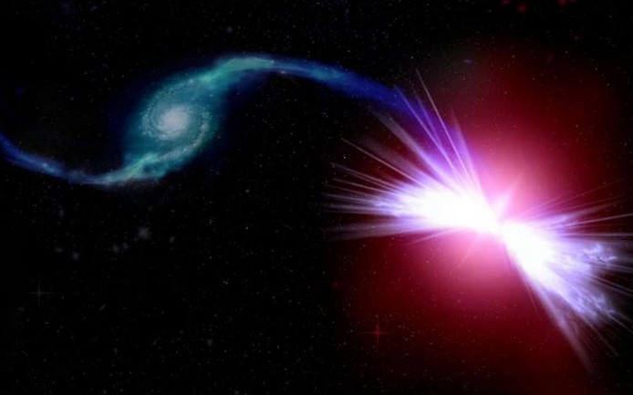
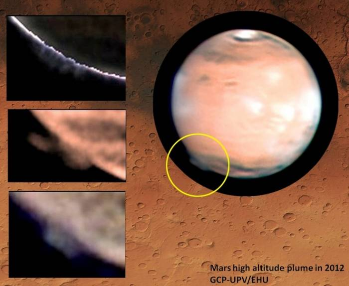

В бесплодности галактик ученые винят «красные гейзеры».
Новые наблюдения, которые провели астрономы за сотнями крупных галактик, показали, что процессы звездообразования
прекращаются в них в результате возникновения так называемых «красных гейзеров» – потоков сверхгорячего газа, порождаемых сверхмассивной черной дырой.

По мнению ученых, практически во всех центрах галактик присутствует сверхмассивные черные дыры, в том числе и в нашей галактике е Млечного Пути. Эти «монстры» являются «незримыми дирижерами»
процессов круговорота вещества по всей галактике. Установлено, что активные черные дыры постепенно опустошают галактики и прекращают в ней процессы звездообразовании,
так как черная дыра разогревает и выбрасывает холодные облака пыли и водорода за пределы галактики. Ну почему же некоторые галактики со «спокойными» черными дырами так же бесплодны?
«Звезды рождаются из сгустков газа, но, как показывают исследования нескольких последних десятилетий, во многих галактиках, несмотря на присутствия, там материи для образования звезд
и неактивной черной дырой в центре, новые светила так и не рождаются. Это сравнимо с пустыней, покрытой густыми облаками, в которой не идет дождь. Мы подозревали,
что процессы звездообразования с «тихими» черными дырами как то подавляется, и теперь мы нашли объяснение – это «красные гейзеры»», - пишут авторы исследования.
В рамках нового исследования ученые использовали данные недавно опубликованного атласа близлежащих галактик SDSS-IV MaNGA, подготовленного Слоановским обзором неба. В этих звездных картах ученых
интересовал спектр облаков газа в других галактиках, по которому они определяли то, как перемещаются эти скопления водорода и что потенциально двигает ими.
В результате специалисты установили, что несколько сотен «спокойных» галактик из обзора SDSS-IV MaNGA имеют необычную закономерность –
во всех них газ вращался вокруг их центра не равномерно, а хаотичным образом. Наблюдения за одной из этих галактик, под названием «Акира»,
показали, что в этом был виновата структура, которая, по определению авторов исследования, следует называть «красными гейзерами».Это конические пучки горячего газа,
периодически выбрасываемые сверхмассивной черной дырой.
одобные потоки газа, как считают исследователи, формируются в окрестностях черной дыры даже тогда, когда та находится на «голодном пайке», то есть
не поглощает большие массы газа и пыли. Однако мощность сверхмассивной черной дыры все же достаточно для того, чтобы «перемешивать» газ по всей галактике,
разогревать его и делать непригодным для формирования новых звезд.
Это может объяснять, почему сегодня примерно половина галактик в наблюдаемой астрономами части Вселенной, являются, по сути, мертвыми.
Супервспышки на Солнце помогли появиться жизни на Земле.
В новом исследовании ученые проводили наблюдения за бурями, которые протекают на солнечноподобных молодых звездах. И там все намного серьезней - в результате мощнейших вспышек происходят
массовые выбросы высокоэнергетических частиц
- за несколько минут в окружающее пространство уходит до триллиона мегатонн в тротиловом эквиваленте, что равняется всей энергии, которую человечество может выработать за миллион лет.
По мнению авторов исследования, наше Солнце, около 4 миллиарда лет назад тоже производило такие супервспышки, которое искажали магнитное поле молодой Земли и потоки заряженных частиц
попадали в атмосферу планеты, где вступали в химические реакции с участием молекулярного азота, закиси азота и цианистого водорода. Последний и станет источником атомарного азота для
построения биологических молекул, в том числе аминокислот, создавая первые
кирпичики жизни, а закись азота является парниковым газом, который может способствовать разогреву атмосферы планеты до температур, достаточных для поддержания воды в жидком состоянии.
Согласно последним данным, в атмосфере древней Земли присутствовал азот в молекулярной форме, однако этого, по мнению специалистов недостаточно для возникновения жизни на планете, поскольку
большую химическую активность проявляет не молекулярная, а атомарная форма азота, которая впоследствии может превратиться в биологически полезные формы.
Наблюдения в далеком космосе показывают, что «супервспышки» сейчас можно наблюдать на других солнцеподобных молодых звездах, следственно, на планетах вокруг
этих звезд могут протекать те же процессы, которые дают высокие шансы на зарождение там жизни.
Астрономы раскрыли тайну загадочной дымки над Марсом.
Ученые раскрыли тайну, касающуюся загадочной дымке, которая иногда поднимается высоко над поверхностью Марса.

Напомним, что впервые дымку, которая образовалась высоко над поверхностью Марса, была обнаружена астрономами-любителями дважды, в марте, а затем в апреле 2012
года на аномально большой высоте в 250 километров. Тогда шлейф, простиравшийся над площадью в 500 тысяч квадратных километров,
образовался за десять часов и исчез через десять суток. Странно, но не один из спутников, находящихся на орбите Красной планете, не увидел этих образований.
Тогда астрономы обратились к архивным данным наблюдений за Марсом, как астрономами-любителями, так и наземных обсерватории и космического телескопа «Хаббл»
в период с 1995 по 2014 год. Исследуя снимки, ученые смогли обнаружить подобные образования, но на высоте, не превышающей 100 километров. За исключением одного
снимка космического телескопа «Хаббл» от 17 мая 1997 года, где специалисты обнаружили такой же по высоте шлейф, как и в 2012 году.
Однозначного ответа, что же это такое, тогда ученые дать не смогли. Было предположения, что дымка состоит из двуокиси углерода или водяных частиц или это
необыкновенно яркое полярное сияние. Однако они не могли объяснить природу возникновения формаций. Так, пыльные бури на Марсе могут выбрасывать
в космос частицы грунта на высоту до 60 километров, а полярные сияния, по идеи, не могут быть на Марсе такими яркими.
днако ученые смогли все же разгадать тайну. Оказалось, что тут дело в нашем светиле. Дымка существовала в ионосфере Марса, где газовая оболочка планеты взаимодействует
с заряженными частицами от Солнца. Ученые установили, что время появление загадочной дымки на Марсе совпадает с достижением планеты выбросов корональных масс от Солнца.
События на светиле изменяли космическуюпогоду и приводили к кратковременному увеличению скорости утечки плазмы, с образованием своеобразного шлейфа из атмосферы Марса.